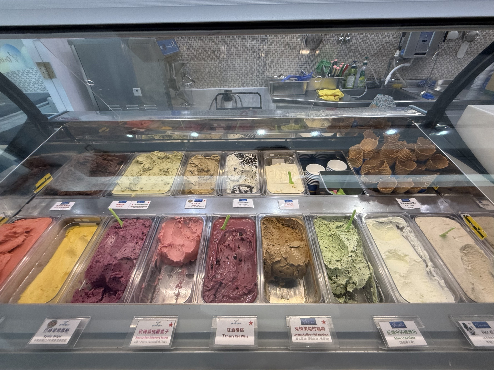

伴隨著偶發的午後雷陣雨，夏天來了，讓人想來一球甜蜜冰涼的冰淇淋。冰淇淋按照製作方式、乳脂含量與口感可以分成三大類，美式冰淇淋(Ice Cream)乳脂含量較高，主要成分是牛奶、鮮奶油、糖，例如哈根達斯就是最經典的代表；雪酪(Sorbet)的特色是不含乳製品，也幾乎沒脂肪，是以水果和糖製成的冰品，口感清爽接近冰沙；至於義式冰淇淋的乳脂含量較低，使用更多牛奶，含空氣量少，因此口感更濃郁，材料偏向天然，例如開心果、水果、巧克力。
台北其實有不少Gelato店，隨便走進一家我想都不會差到哪去，但因為天母地區有歐洲學校、美國學校的關係，我更願意相信那群外國人對義式冰淇淋的品味。鄰近天母棒球場的「On the Road 義式手工冰淇淋專賣店」創立自2015年，每周都會更換菜單，提供多樣口味的冰淇淋，也有宅配服務，可以上網訂購喜歡的冰淇淋產品，甚至還賣開心果醬。
這次吃的口味是「開心果」和「柚香百香果」，開心果可說是義式冰淇淋的招牌，也是我每次吃Gelato都會點的品項。On the Road強調它們選用開心果界的王者「勃朗特綠色開心果」，原產地在埃特納火山北側山腳坡地，種植面積3000公頃，產量只佔世界開心果總產量的0.25%，價格也比其他種類高昂。

我對開心果的等級沒什麼研究，但它開心果冰淇淋的香氣十足，且帶有小小碎粒，非常濃郁，是真心必點的口味。至於柚香百香果則是雪酪口感，百香果的香氣淡雅，吃起來不過分甜膩，其中的小塊柚子皮讓它吃起來的口感更豐富。我猜On the Road可能沒有雷的口味，端看個人喜好，下次去可以試試其他的。